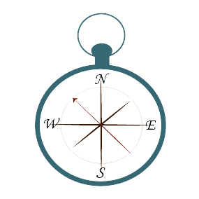
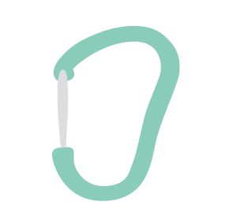
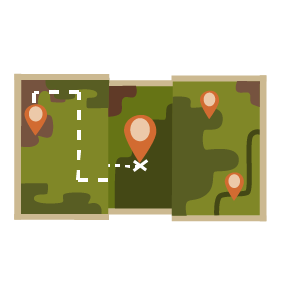

Намет, палатка — укриття, що складається з тканини, або іншого матеріалу, який монтується на каркас — дуги, або альпенштоки, а також укріплюється допоміжними мотузками. Спершу використовувались як портативне житло кочовими народами, сучасні намети використовуються, в основному, як експедиційні, для кемпінгу і тимчасового укриття в туризмі.
Спортивне обладнання
Що взяти з собою у похід?
Намет
Компас

Компас — прилад для орієнтування на земній поверхні і в гірничих виробках відносно напряму магнітного або географічного меридіана. Вказує напрямок географічного або магнітного меридіана, служить для орієнтування щодо сторін світу. Синя стрілка — північ, червона — південь.Перший компас був винайдений в Китаї і представляв собою невелику плитку, на якій розташовувалася стрілка, за формою нагадує ложку. Цей компас був зроблений з магнітного залізняку і використовувався для ворожіння.
Рюкзак
Похідні рюкзаки. Це перша асоціація, яку представляють всі люди при фразі "туристичний рюкзак". Обсяг такого рюкзака становить не більше 50 літрів. Головна особливість похідного рюкзака - зручна і міцна спинна конструкція. Основне правило при носінні похідного рюкзака не "перевантажуватися", так як це може створити непридатні для сходження умови.
Карабін

Карабін — основний з'єднувальний пристрій у скелелазінні, альпінізмі, промисловому альпінізмі, спелеології, дельтапланеризмі, парашутному спорті, роупджампінгу і багатьох інших суміжних видах діяльності. Застосовується для страховки, самостраховки, як блоки для сполучення мотузок із скельними гаками та інше. Також у силу своєї універсальності використовується в рюкзаках, ранцях, сумках, кріпленнях для зв'язки ключів тощо.
Спальний мішок
Спальник, спальний мішок — предмет похідного побуту, призначений для відпочинку і сну, має форму кокона і використовується туристами, альпіністами, спелеологами, рідше водіями-далекобійниками і військовими підрозділами в похідних умовах. Форма спального мішка забезпечує кращу ізоляцію від холоду ніж звичайне покривало а також додаткову амортизацію. Для кращої теплоізоляції і амортизації зазвичай укладається на каримат.

Карта

Туристичні карти зазвичай виготовляють з урахуванням топографічних карт. Але, на відміну від них, на туристських картах позначено цілу низку корисних у поході об'єктів – маршрути, місця для стоянок, джерела води, пам'ятки. Крім того, авторами цих карток зазвичай перевіряється актуальність вихідної топографічної карти і по можливості вносяться виправлення, що наближають картинку на карті до нинішнього стану місцевості.